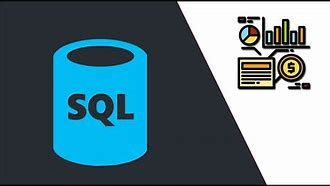
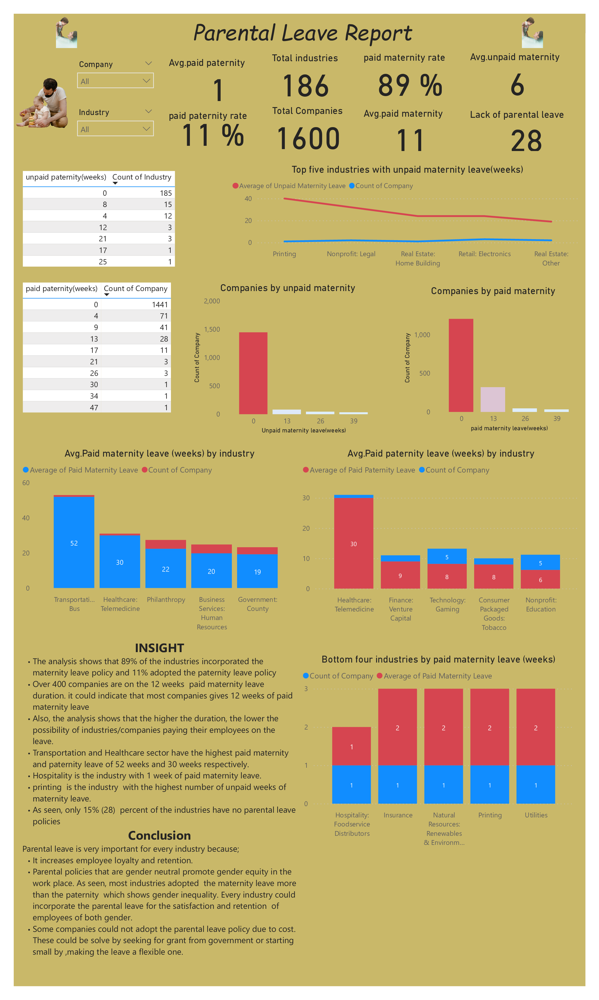
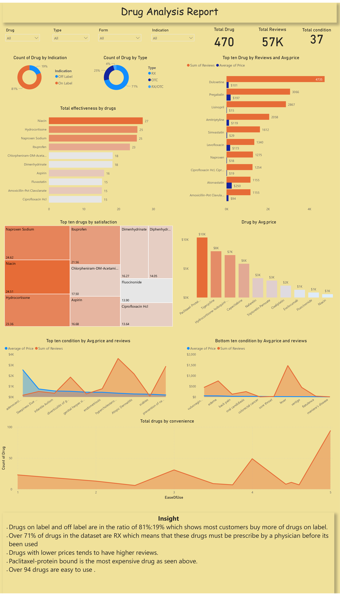

I analysed telecommunication customer churn data in python and powerBI. The data set contain over 7000 unique customers data. Data cleaning and exploration was done in python using libraries such as matplotlib, pandas and numpy.
While the dashboard was created in power Bi and noteable insights were gathered. I also made recommendations that could reduce churn

The dataset contains information about over 10,000 apps available in the Google Play Store, including details about the apps' categories, ratings, prices, and more.
For this project, I used SQL to extract and clean the data, and then visualized the data using Tableau to identify trends and insights about the apps. Some of the key insights I discovered include:
The most popular app categories in the Google Play Store are Family, Game, and Tools.
The average rating of apps is 4.2 out of 5, with the highest-rated categories being Events, Education, and Art & Design.
Free apps are more popular than paid apps, with over 90% of the apps in the dataset being free.

In this project, I have demonstrated my SQL skills by creating a database containing the pizza-runner table and a dannys-diner customer table.
Then imported the datasets and query them to retrieve data.

The dataset used in this analysis contains information about TV shows and movies available on Netflix as of 2021. The dataset includes details such as title, director, cast, country of origin, rating, release year, and duration.
I used various Python libraries, including Pandas, Matplotlib, and Seaborn, to clean and analyze the dataset.
First, I cleaned the data by removing missing values, converting data types, and handling duplicates. Then, I performed exploratory data analysis to gain insights into the dataset.
I created visualizations to understand the distribution of content on Netflix, such as the number of TV shows vs. movies and the distribution of content by country.

This project was conducted to showcase how I used Excel to analyze data. The brewery dataset used for this analysis aimed to provide necessary insights that would help the manager make informed decisions for the growth of the business. The dataset was imported into SQL to extract data for the retail company and then imported into Excel for visualization.
The project also included hands-on experience with Excel functions and tools, as well as a documented thought process.
Data cleaning is a critical step in data analysis that involves identifying and correcting or removing inaccuracies, inconsistencies, and discrepancies in a dataset.
This step is crucial because inaccurate or incomplete data can lead to flawed analysis and incorrect conclusions. SQL is a powerful tool for data cleaning, as it provides a robust set of functions for data manipulation and cleansing.
The project showcase few steps and codes i took for cleaning the nashvielle housing data set.

I visualized parental leave data using power BI purposely for article publication.

Dashboards created using power BI to better story telling